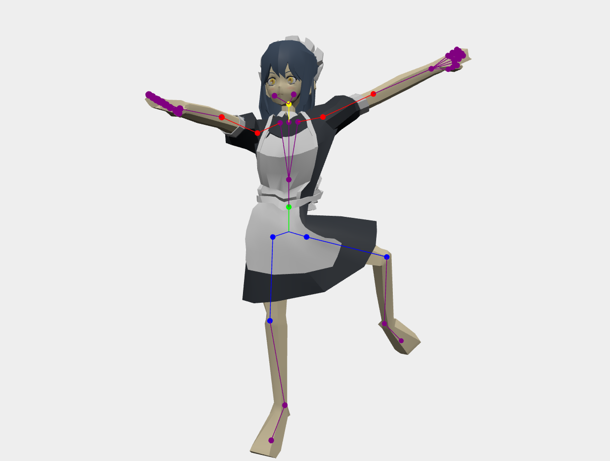

前職では主にWebアプリケーション, C++, Pythonでのソフトウェア開発など。
現在は自分用のアプリ開発でリハビリ中。

Python / CustomTkinter
glbファイルの読み込み・ボーンのマウス操作デモ。ボーン端の●をマウスでドラッグすることでモデルの操作が可能。
View on Web browser製造業向け3Dデータの軽量化・閲覧ソフトの開発。
主にPC, スマートフォン, VRゴーグルを用いたWebサイト上での3Dデータ表示処理、及びデータ変換処理を担当。